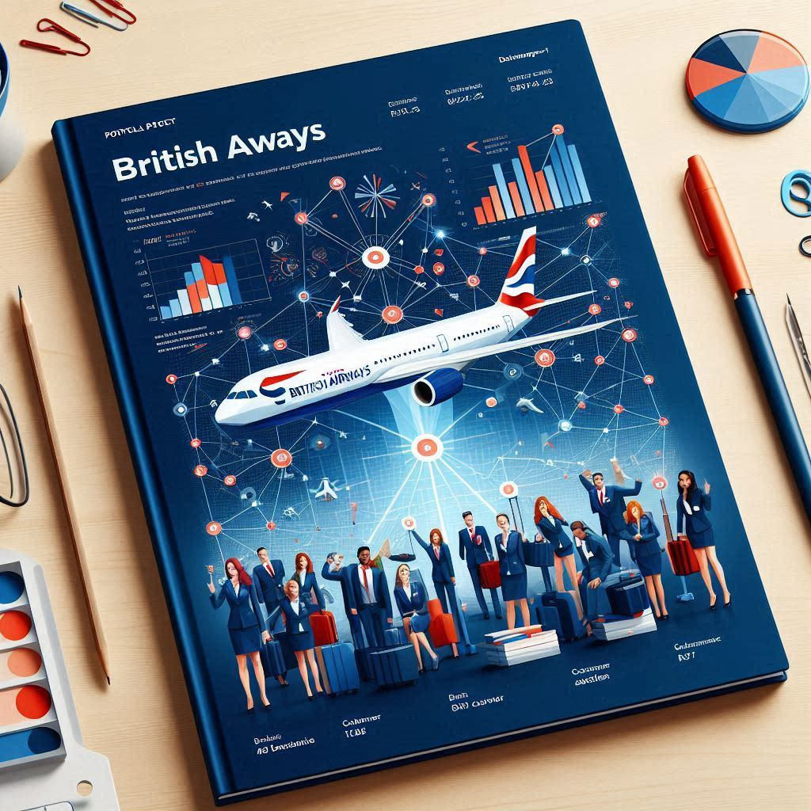

Welcome to the British Airways Data Science Virtual Internship Programme, offered through Forage. This unique opportunity allows participants to analyze customer reviews using sentiment analysis and gain valuable insights and analysis skills. Join us in this exciting project to delve into the world of data science and contribute to the success of British Airways.

Introducing Accenture's Data Analytics & Visualization - Virtual Experience Program, a virtual internship opportunity for aspiring data analysts and visualization experts. Through this project, participants will gain valuable hands-on experience in the field while working with real data sets and learning from industry professionals. The program will also provide insights into the top 5 most popular categories of content on Social Buzz, giving participants a deeper understanding of data analysis and visualization in a real-world context.
.png)
As a data science intern at BCG, I spearheaded a project to address PowerCo's rising SME customer churn. I developed a predictive model using advanced analytics to identify customers likely to churn due to price sensitivity. This enabled PowerCo to offer targeted discounts, resulting in a significant reduction in churn.
My work showcased my ability to leverage data to drive business outcomes and contribute to customer retention strategies
.png)
This project aims to address the persistent disparities in student performance by leveraging machine learning techniques. By analyzing factors such as gender, ethnicity, parental education, lunch type, and test preparation courses, we seek to identify key determinants of academic success and develop a predictive model. Goal is to inform targeted interventions and policies that can improve educational outcomes for all students.
I developed a personalized e-commerce product recommendation system using Streamlit. By combining rating-based, content-based, collaborative filtering and hybrid filtering approaches, I provided users with tailored suggestions. The visually appealing interface enhanced the user experience and facilitated efficient product discovery. This project showcases my ability to design and implement effective recommendation systems.
.png)
I successfully developed a predictive model using Artificial Neural Networks (ANNs) to identify customers at risk of churning in a telecommunications company. The model, deployed as a web application using Streamlit, achieved an accuracy of 87% in predicting churn. By leveraging customer data, the model effectively identified key factors contributing to churn, enabling targeted retention strategies.